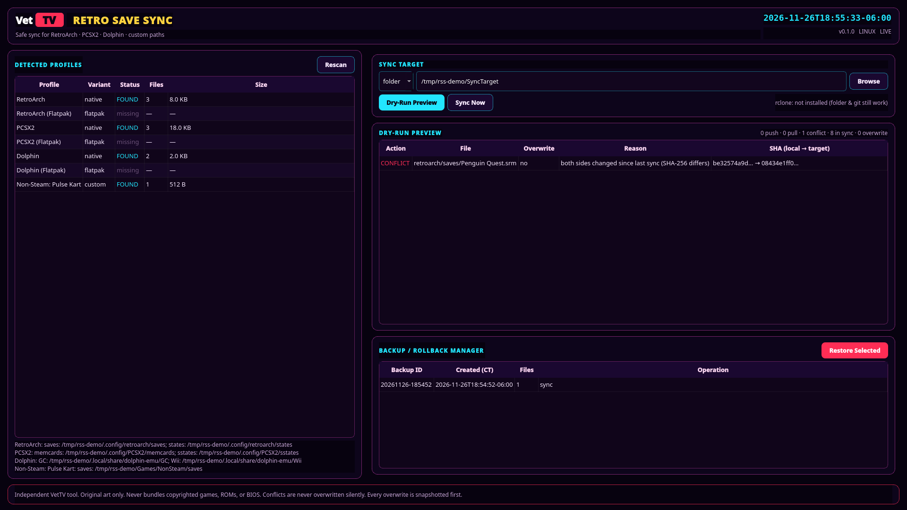

Retro Save Sync
Safe, reversible save sync for RetroArch, PCSX2, Dolphin, and your custom non-Steam save folders, across Linux, SteamOS, and Windows.

What it does
Auto-detect emulators
Finds RetroArch, PCSX2, and Dolphin saves: native and Flatpak on Linux/SteamOS, %APPDATA% and Documents on Windows.
Custom folders
Add any non-Steam game or emulator save folder and sync it alongside the rest.
Folder, Git, or rclone
Sync to a USB drive, NAS, Syncthing or cloud-client folder, a Git repo, or any rclone remote.
Never clobbers a save
SHA-256 three-way conflict detection stops instead of silently overwriting independently changed saves.
Automatic rollback
Every overwrite is snapshotted first, and restores are SHA-256 verified.
CLI + desktop GUI
Dry-run preview, scan, sync, backups, and restore from the terminal or a dark Qt 6 app.
Install & run
CachyOS / Archfish / bash
sudo pacman -S --needed python git
git clone https://github.com/VetTV-Studios/vettv-retro-save-sync
cd vettv-retro-save-sync
python -m venv .venv
source .venv/bin/activate # fish: activate.fish
pip install -e ".[gui]"
retro-save-sync guiSteamOS / other LinuxDesktop Mode
git clone https://github.com/VetTV-Studios/vettv-retro-save-sync
cd vettv-retro-save-sync
python3 -m venv .venv
source .venv/bin/activate
pip install -e ".[gui]"
retro-save-sync guiWindowsPowerShell
git clone https://github.com/VetTV-Studios/vettv-retro-save-sync
cd vettv-retro-save-sync
py -m venv .venv
.venv\Scripts\activate
pip install -e ".[gui]"
retro-save-sync guiCLI quick tourany OS
retro-save-sync scan
retro-save-sync preview --target /mnt/saves --target-type folder
retro-save-sync sync --target /mnt/saves
retro-save-sync backups
retro-save-sync restore 20261126-183000Requires Python 3.11+. Never bundles games, ROMs, or BIOS files. Bring your own.
Builds & source
Download v0.1.0
Grab the Linux/SteamOS AppImage or the Windows .exe from the v0.1.0 release. Checksums in SHA256SUMS.txt.
GitHub repo
Source, issues, and docs at VetTV-Studios/vettv-retro-save-sync.
Packaging workflow
The build workflow produces a Linux AppImage and a Windows .exe with PyInstaller. Every v* tag publishes a GitHub Release.
PyInstaller spec
packaging/retro-save-sync.spec builds both targets from one spec.